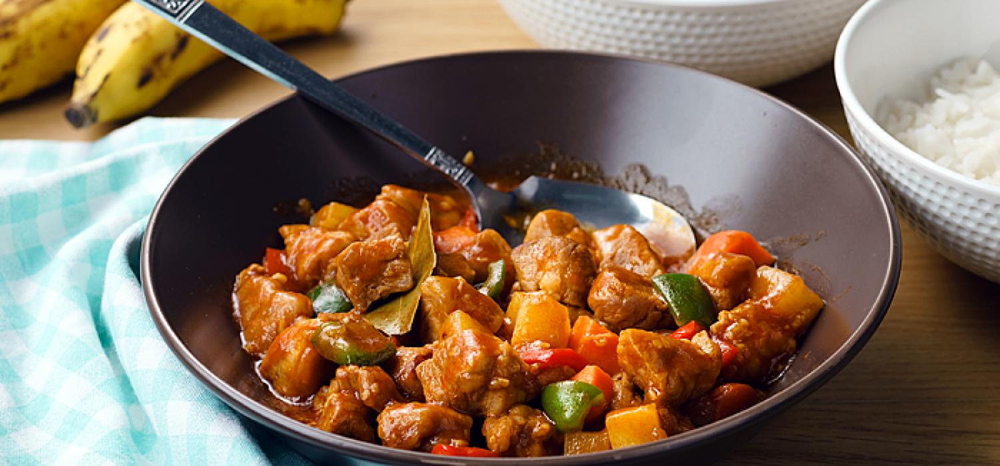

Pork Menudo

Pork sisig is a popular Filipino dish made from sizzling, chopped pork belly, seasoned with onions, calamansi, and chili peppers, often served on a hot plate and topped with an egg for added richness.
Pork sisig is like the party animal of Filipino cuisine—crispy, sizzlin’, and ready to steal the show! Imagine finely chopped pork belly that’s been grilled to perfection, then tossed with onions and a hint of chili for that delightful kick. It’s served on a hot plate, making it sound like it’s dancing, and topped with an egg that’s just waiting to be cracked open. Perfect for when you want a dish that says, “I’m fancy, but I also love a good time!” Just make sure you have a cold drink nearby—it’s the ideal companion for your taste buds’ wild night out!
Ingredients
- 3 tbsp Vegetable
- 1 pc Carrot
- 1 pc Potato
- 2 sachet Maggi Magic Sarap
- 0.5kg Pork Shoulder
- 3 tbsp Vegetable Oil
- 6 cloves Garlic
- 1 pc Red Onion
- 1 pc Red Bell Pepper
- 1 pc Green Bell Pepper
- 1 pc Bay Leaf
- 1 cup Tomato Sauce
- 2.5 cups Water
- 0.25 tsp Ground Pepper
- 1 tbsp Brown Sugar
- Sauté potato and carrot in 1 tbsp oil until golden brown. Remove and set aside.
- Season pork shoulder with 1 sachet of MAGGI® Magic Sarap®. Sauté pork in the same pan. Remove and set aside.
- Sauté garlic, onion and bell peppers. Pour tomato sauce and water. Add pork, bay leaf, pepper and sugar. Simmer for 45 minutes.
- Add potato and carrot. Season with remaining sachet of MAGGI® Magic Sarap® and simmer for another 10 minutes. Transfer into a serving plate and serve.